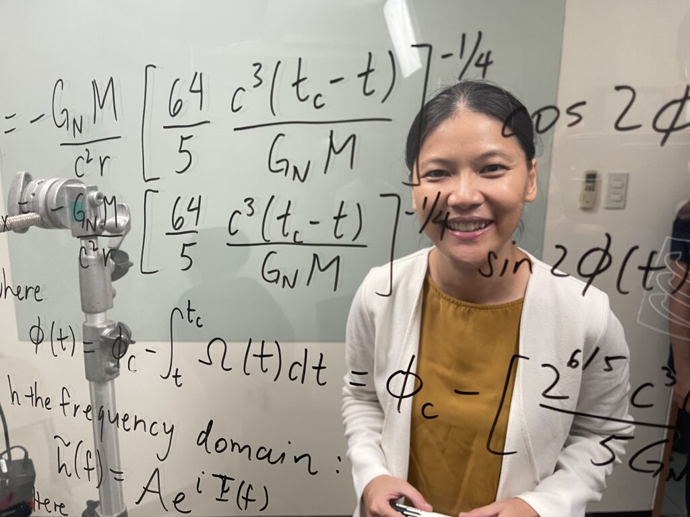

Reinabelle Reyes
Reinabelle Reyes, Ph.D. is an Associate Professor at the National Institute of Physics (NIP) in UP Diliman, where she heads the Data and Computation (D&C) Research Group. She serves as a data science consultant for UNDP Philippines, Z-Lift Solutions, Inc. and Citizen's Budget Tracker. She is also co-founder of Pinoy Scientists and adviser of SEDSPH (Student for the Exploration and Development of Space — Philippines Chapter).
Learn more about Reina's STEM journey through her conversation with our Education and Research Fellow, Swastika Issar:
Let's go back to the beginning — could you paint a picture of your childhood for us?
I grew up in a town called San Juan in Metro Manila, which is the capital region of the Philippines. It was a very urban environment. I'm second-generation Filipino Chinese. Three of my four grandparents immigrated to the Philippines from China. Many people from my parents' generation in the Filipino Chinese community were entrepreneurs and ran their own businesses. My family ran a construction supply shop that sold everything you'd need to build and paint a house.
Typically, families like ours in the Filipino Chinese community would have the children take over the family business. But my parents encouraged us — my sister and I — to pursue our own paths. That was a big deal, and I'm very grateful for it.
What drew you to physics and data science?
[TODO: fill in] — Full interview text to be added. The interview covers Reina's path from physics to data science, her work at UP Diliman, her consulting for UNDP Philippines, and the co-founding of Pinoy Scientists.
Advice for young Filipinas interested in STEM
[TODO: fill in] — This section covers Reinabelle's advice for young Filipina women considering careers in science, technology, engineering, and mathematics.